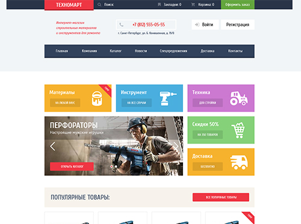
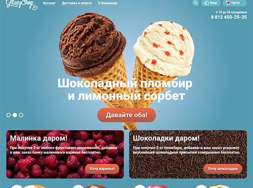
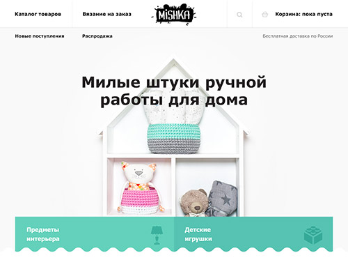
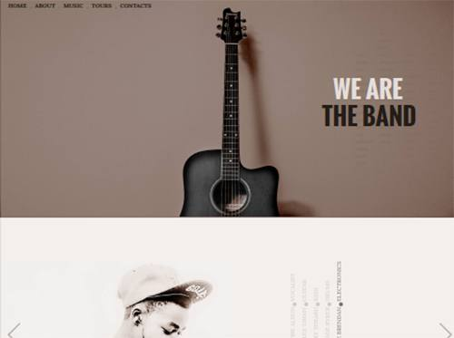
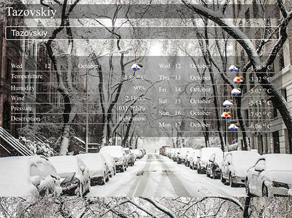
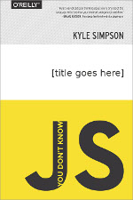
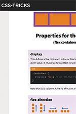
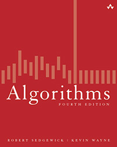

Владимир Тяло
Привет! Меня зовут Владимир. Большую часть свой жизни я работал на железной дороге. За это время прошел несколько ступеней по карьерной лестнице, обучил премудростям работы поездного диспетчера дюжину новичков, заслужил уважение коллег и скупое одобрение руководства.
Несколько лет назад я начал повторно изучать английский язык. Когда понимание беглой английской речи перестало быть проблемой я стал искать возможность приложить свои навыки и наткнулся на оду из открытых образовательных онлайн платформ - edx. Меня всегда привлекала математика и технологии поэтому я выбрал Introduction to Computer Science and Programming от MIT. Наверное после, неожиданно для себя, успешного окончания в начале 2014 года этого курса я задумался о смене карьеры. Последующие полтора года все свободное время я тратил на изучение программирования, прошел еще несколько курсов на Coursera (Algorithms, Programming languages), украинский проект JavaRush(28 уровень) и некоторые другие. И все же свободного времени было не так много и когда накопилось достаточно знаний, средств к существованию и уверенности в себе я решил уйти с немного надоевшей работы и потратить какое-то время на изучение веб технологий.
Изучать веб разработку начал с основ - HTML и CSS. В феврале 2016 г. успешно окончил базовый курс HTML академии, а в июне продвинутый. Это оказалось немного сложнее и интересней чем я ожидал. Зато теперь я знаю очень много страшных, но очень полезных слов: BEM, npm, Node.js, SASS, LESS, postCSS, gulp, autoprefixer, responsive design, retinisation, picturefill, и др.
С тех пор как увлекся веб технологиями успел сверстать несколько сайтов и одностраничных приложений, часть из которых можно увидеть ниже . В каждом из этих проектов добивался максимального соответствия PSD макету (pixel perfect) и поддержки всех современных (и не очень) браузеров.
В разработке стараюсь придерживаться советов Роберта Мартина и писать чистый код (часто помогает eslint). Знаком с SOLID принципами объектно-ориентированного дизайна и некоторыми паттернами проектирования, но в javascript меня больше привлекают функциональные возможности языка (first class functions, map, filter, reduce). В написании стилей понравился модульный подход совмещающий БЭМ и SASS (проекты "Mishka" и "The Band" ). Для написания более надежного кода начал изучать тестирование с "Mocha" и "Chai" (проект "Weather" ).
Мои работы:
- 
- 
- 
- 
- 
Лучшие бесплатые ресурсы:
-

Серия из 6 небольших книг в которых автор Kyle Simpson рассказывает простым языком о сложных аспектах javaScript развевает некоторые мифы и заблуждения.
-

Css-tricks - сайт, где можно найти статьи о современной веб разработке, лучших практиках применения html, css и javascript. Отличное дополнение к Mozilla developer network .
-

Ресурс одного из создателей алгоритма Red-Black tree - Robert Sadgewick. Практически полностью повторяет его книгу Algorithms .
-
Книга от разработчика компании Electronic Arts - Robert Nystrom . Одна из самых увлекательных книг по паттернам проектирования. Будет полезна не только разработчикам игр, но и всем кто хочет лучше понять паттерны.